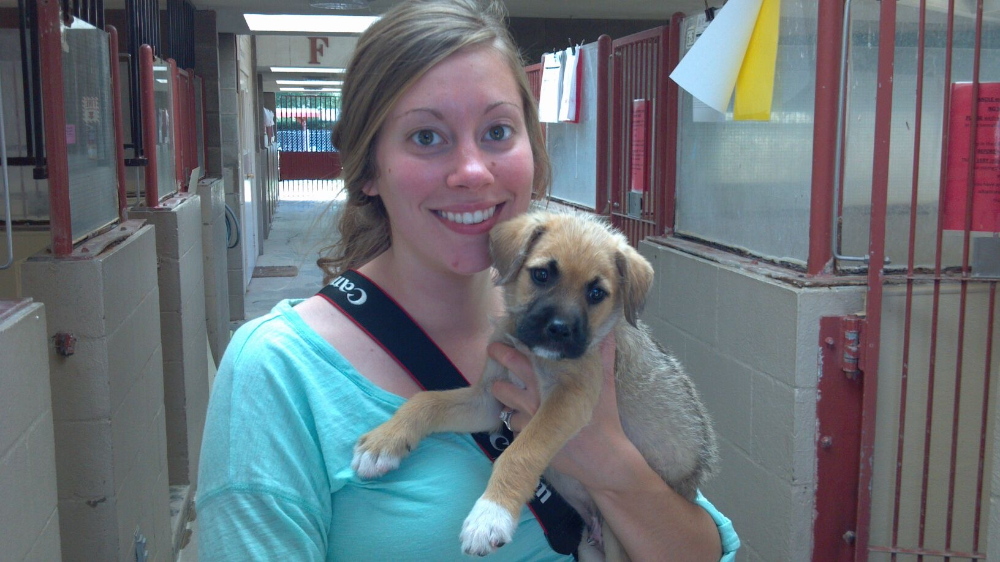
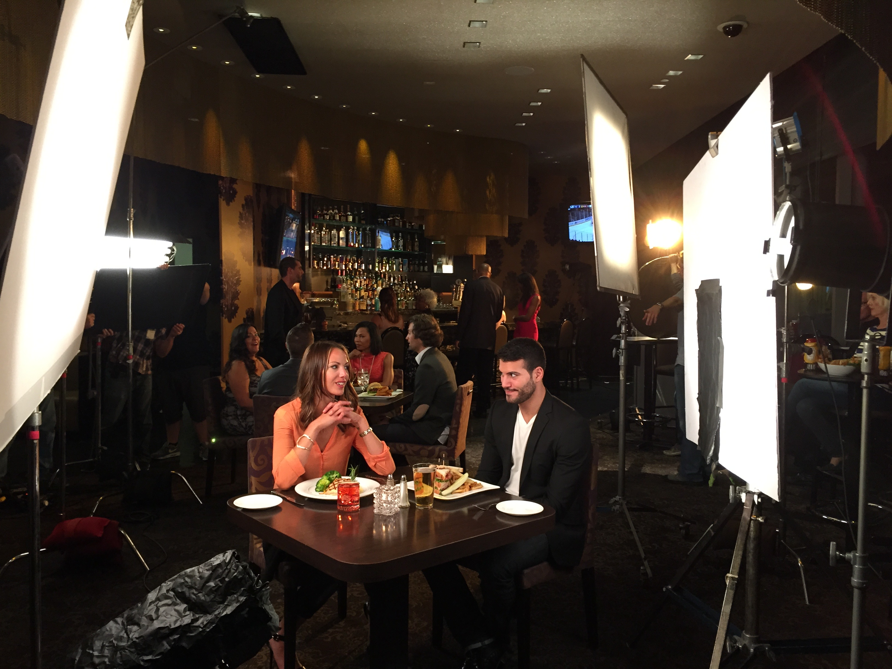
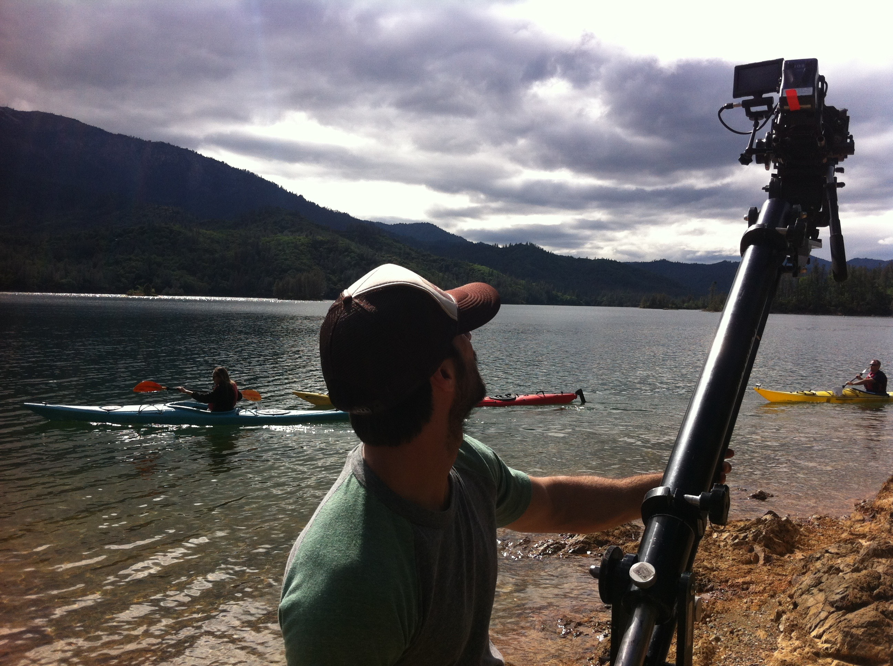

In 2011, I graduated from the University of Missouri Kansas City. I received a Bachelor of Arts degree in Communications, with an emphasis in film and media art and a minor in Business Administration.
The March of Dimes
Shortly following college graduation in 2011, I relocated to San Diego, CA, where I got my first job working as a temporary Events Assistant for the March of Dimes.
During this position I was tasked with coordinating the March of Dime's annual March for Babies events which drew 11,000 people.
That task meant that I would recruit and train volunteers, book vendors, acquire in-kind donations, stay within monetary and timeline restrictions, and essentially plan out and execute all logistics of the events.
The events were succesful and the opportunity proved to be an awesome experience and a great first professional job.
Helen Woodward Animal Center
After my time with the March of Dimes came to an end, I moved on to working for another non-profit organization. This time it was an animal rescue called Helen Woodward Animal Center. I was hired as a Database Coordinator for the development department, where I processed all of the donations that we received.
Because of my degree in film and media, and with wanting to get experience working in the world of video production, I began taking photos and making videos for the animal center, in addition to the job I was originally hired for. Before long, I had two jobs and my second title was Media Specialist.
This job was fun because not only was I getting to work with dogs and cats, but I began to develop experience in video production, which is what I really wanted to do.

ImageCrew
After getting experience with video production, I moved on to a video production company called ImageCrew, where I was hired as a Production Coordinator.
In my job as production coordinator, I was responsible for coordinating all aspects of video production, including pre-production, production, and post-production.
I managed our schedules, hired crew and talent, booked equipment and locations, made travel arrangements, and was on set for our shoots to ensure everything ran smoothly.

At ImageCrew, our clients were mainly those in the entertainment industry, so we primarily made commercials for hotels, casinos, and golf courses. This job brought together my event coordination experience, with my video production experience.
I like to think of each shoot as it's own event, where I was responsible for bringing everything together. I eventually moved from Production Coordinator to Production Manager. During my time at ImageCrew, I relocated back to St. Louis, MO, which is where I had grown up.
ImageCrew allowed me to continue working for them from St. Louis. But after almost 2 years, it was time for a new challenge!

Vat19
In November 2015, I became a Video Producer at Vat19. Vat19 is a very interesting place. It is primarily an online retail site, www.vat19.com that sells curiously awesome products. But in order to sell our products, we made commercials for them on YouTube.
The commercials we made for YouTube weren't just any commercials though. They were funny, quirky, sometimes weird, and gained many fans on YouTube. To date, Vat19 has over 7,000,000 YouTube subscribers. In my role as video producer, I was primarily responsible for:
coordinating all video shoots
creating weekly production schedules
purchasing and obtaining all props, wardrobe, and set pieces
assisting on set
and acting as on camera talent for video and photography shoots
Vat19 Production Crew
Most people that work at Vat19, no matter their job, usually end up being in the videos. We rarely hired outside talent, so we were both behind and in front of the camera. Being in front of the camera was very outside my comfot zone. But over time, I became more comfortable, and I'm grateful for the opportunity I had to step outside my box.
Things started to get really interesting when I started to get recognized by fans when I was just going about my daily life. I started to have people come up to me at stores and restaurants, asking if I was Kara from Vat19.
Working at Vat19 was a really fun job, and I did a lot of things there that most people have probably never done in their life. However, I started itching for a new challenge.
I started to feel like I was not using my full potential and began searching for new opportunities in other industies. Enter LaunchCode and CodeCamp.
After taking LaunchCode's Discovery course online, I decided to apply to CodeCamp and take the leap into learning new skills for a new industry. And I'm very glad I did! I am really enjoying what I'm learning in the course. Coding feels like solving lots of little puzzles, in order to create something much larger.
I am looking forward to launching a brand new career in a brand new industry when I've completed the program!